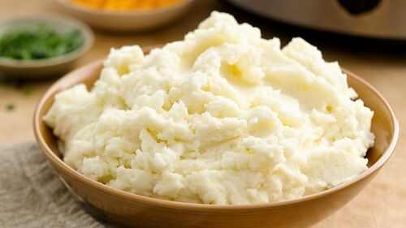

If you love good, old-fashioned mashed potatoes, this is the perfect recipe. Made with Idaho potatoes, milk, butter, and optional garlic, this go-to recipe for simple, homemade mashed potatoes is a classic holiday dish. Learn how to make mashed potatoes that come out smooth, creamy, and delicious every time. Serve with gravy or extra butter on top.
INGREDIENTS
- 2 lbs potatoes, peeled and quartered
- 3 cloves garlic, peeled
- 1 cup milk
- 2 tbsp butter
- salt and black pepper
INSTRUCTIONS
- Bring a large pot of salted water to a boil. Add potatoes and garlic, lower heat to medium, and simmer until potatoes are tender, 15 to 20 minutes.
- When the potatoes are almost finished, heat milk and butter in a small saucepan over low heat until butter is melted.
- Drain potatoes and return to the pot. Slowly add warm milk mixture, blending it in with a potato masher or electric mixer until potatoes are smooth and creamy. Season with salt and pepper.